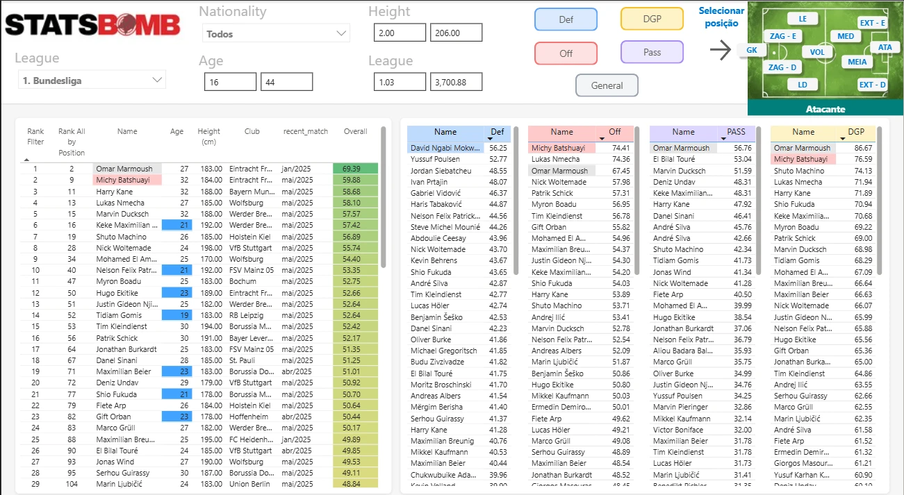
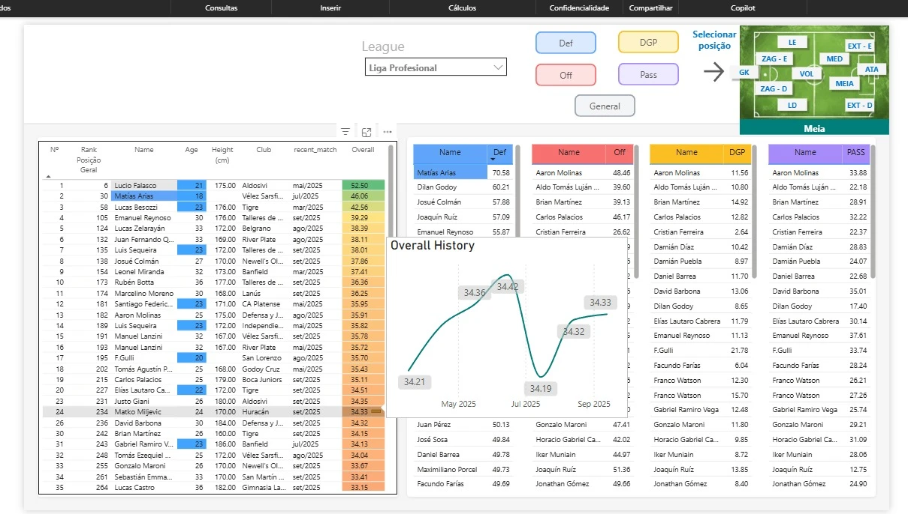
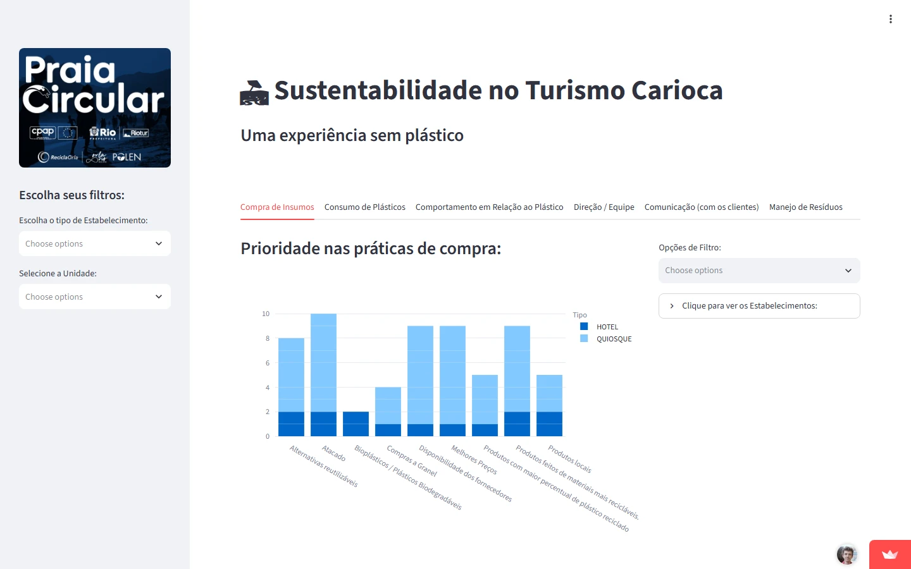

Projetos
Dados e IA onde a decisão acontece
3 projetos — clique para explorar
IA de Segurança da Vale
Connect Bot no Teams e Databricks Genie: duas portas para a mesma informação de segurança — documentos e dados, em linguagem natural, nas ferramentas que as pessoas já usam.
- <1 minpor consulta
antes 5–10 min - ~5 minpor análise
antes dias - +18 milcolaboradores
com acesso
Connect Bot — bot no Teams para qualquer colaborador: responde sobre documentos via RAG e sobre dados com um agente LLM que transforma a pergunta em consulta às bases (text-to-SQL).
Genie — para analistas: perguntas viram SQL, gráficos, tendências e projeções. De bônus, expôs inconsistências nos dados.
* Dados fictícios para demonstração
Apresentei essas soluções no palco do Summit, para a presidência e todos os VPs, com transmissão para toda a empresa.
- Teams
- RAG
- LLM
- Text-to-SQL
- Databricks
- Genie
- Python
- Remotion
Freelancer · Desenvolvedor do time de scout · ago/2023 – set/2026
Scout · Botafogo
Transformei os indicadores de scout em um ranking por posição — defesa, ataque, passe, duelos e geral — em várias ligas, com histórico de evolução de cada atleta, para apoiar as contratações.
- O tempo que o time gastava montando material passou a ir para análise.
- Filtros por liga, idade, altura e posição no campinho; destaque para jovens e alvos monitorados.
- Ferramentas em uso pelo scouting no período das conquistas da Libertadores e do Brasileirão 2024.
- Power BI
- Python
- Modelagem de indicadores


Freelancer · Desenvolvimento da ferramenta · dez/2023
Praia Circular · União Europeia
Ferramenta de monitoramento do projeto-piloto Praia Circular, do programa Plásticos Circulares nas Américas (CPAP), financiado pela União Europeia com Riotur e Orla Rio, e entregue à Prefeitura do Rio.
- Mostra onde cada quiosque e hotel está na trajetória de redução do plástico: compras, consumo, comportamento, equipe, comunicação e resíduos.
- Filtros por tipo de estabelecimento e unidade, para acompanhar os próximos avanços.
Também na coluna Ancelmo.com, O Globo
- Python
- Streamlit
- Plotly

Trajetória
Da engenharia civil aos dados e à IA
dez/2023 – atualAnalista de Dados SêniorVale S.A.
Lidero tecnicamente o desenvolvimento e a estratégia das ferramentas de inovação aplicadas a SSMA, com foco no uso de IA no dia a dia — buscando valor na IA tanto no desenvolvimento quanto como produto.
- Connect Bot e Genie: IA de segurança para mais de 18 mil colaboradores.
- Arquitetura de dados de SSMA & REC de Ferrosos (Data Factory, Databricks, Logic Apps, Cosmos DB) e sistemas de SSMA da Vale (SAP-IM, Iris, B2B).
mai/2021 – dez/2023AnalistaVale S.A.
Apps de segurança do trabalho em Flutter, React e Power Apps; criação da arquitetura de dados de SSMA & REC de Ferrosos na Azure; Power BI e automações com Power Automate e Python.
dez/2019 – mai/2021Analista JúniorVale S.A.
Dados de segurança do Corredor Sul e Representante de Processo no SAP-IM; BI e automações no Microsoft 365; coordenação de projetos de apps web e mobile.
2014 – 2019Engenharia civil e ambientalMethanum · autônomo · Assoc. Habitacional de Ipatinga
Obras do Minha Casa, Minha Vida, projetos estruturais em Revit, viabilidade de plantas de biogás — e automações em Excel/VBA que me levaram à programação.
Formação
Engenharia, código e dados
- MBA Ciência e Engenharia de DadosUSP / ESALQ2023 – 2025
- Fullstack Developer · 1000 hLabenu2019 – 2020
- Especialização em EstruturasUFMG2016 – 2017
- Engenharia CivilUniversidade Federal de Viçosa2009 – 2013
Certificações Azure Data Fundamentals · Python · HTML5/CSS3 · Git
Idiomas Português nativo · Inglês avançado (B2/C1)
Habilidades
Stack do dia a dia
- IA & Dados
- RAG
- LLM
- Text-to-SQL
- Databricks
- Genie
- Spark
- Data Factory
- Python
- SQL
- Desenvolvimento
- React
- TypeScript
- Flutter
- Streamlit
- Remotion
- Firebase
- AWS
- Microsoft
- Power BI
- Power Apps
- Power Automate
- SharePoint
- Teams
- Sistemas
- SAP-IM
- SAP-ECC
- Hana / BO
- Iris
- B2B
Contato
Vamos conversar?
Sobre dados, IA ou uma ideia que precisa sair do papel.